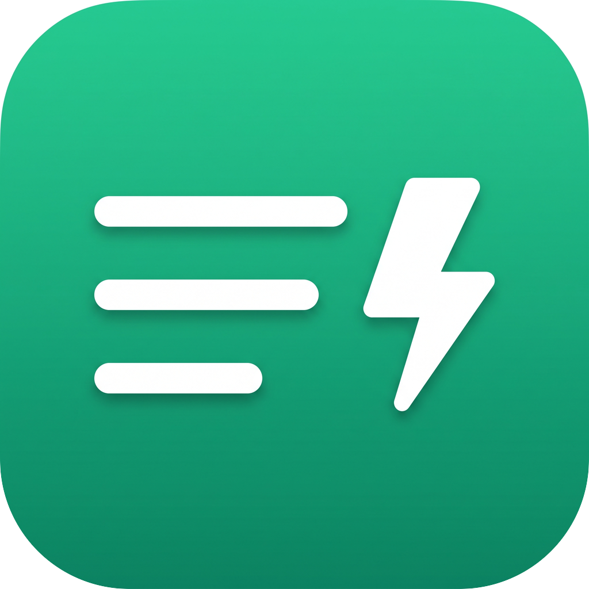

Capture a thought in a keystroke. A floating, Spotlight-style note bar for macOS — that even works over full-screen apps.
Universal (Apple Silicon + Intel) · macOS 11+ · free & open source
Press ⌘⇧M anywhere, type, hit ↵. The bar stays for rapid entry.
A non-activating panel appears on top of any Space — even another app in full screen.
No Dock icon. Everything lives in the floating bar — notes, search, settings.
Browse notes grouped by day, search instantly, edit inline, archive or delete.
Type 50*1.2 and see = 60 right in the bar. Saves the result too.
Pick an accent color. Export everything to Markdown — your data, plain text.